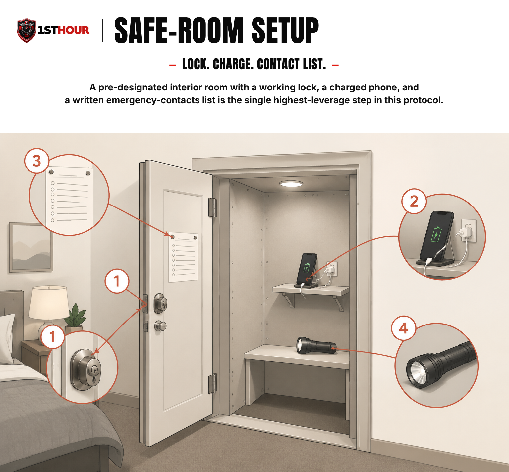

Home Invasion & Intruder Response
Most of this protocol's value is realized before anything happens — a plan your family already knows, practiced once, so panic never fills the gap.
1. Why Preparation Matters
Most of the real value in this protocol isn't in what you'd do in the middle of a home invasion — it's in what your family already knows before one ever happens. A household that has already agreed on a safe room, already practiced getting there in the dark, and already knows who calls 911 and who gathers the kids loses far less time to confusion and panic than a household improvising all of that for the first time while it's actually happening.
That's the organizing idea behind everything in this guide: secure, signal, and shelter first — not confront. A home intruder response is fundamentally a safety-and-avoidance problem, not a combat problem. The overwhelming majority of home-invasion incidents are resolved without the resident ever coming face-to-face with the intruder at all, because the intruder leaves once an alarm sounds, lights come on, or it becomes clear someone inside is awake, on the phone with police, and not an easy target.
This guide is built around that reality. It leads with prevention — the things you do long before any of this is relevant — because that's genuinely where most of this protocol's protective value comes from. Everything after that is a calm, practiced sequence for the rare case where prevention wasn't enough: get your family together, get to a secure space, get the police on the way, and stay there until they arrive.
2. Prevention Basics
This is the one place in the 1st Hour Protocols library where "before it happens" content leads the book rather than sitting in a footnote — because for this specific scenario, prevention genuinely does more work than any in-the-moment response can. Most of what follows costs little and takes an afternoon.
Exterior lighting and visibility
Motion-activated lighting at every entry point — front door, back door, garage, side gates — removes the cover of darkness an intruder relies on to approach unnoticed. Cheap, solar or plug-in motion lights are enough; they don't need to be elaborate to be effective. Trim shrubs and bushes away from windows and doors so there's no place to stand unseen while testing a lock.
Visible security signage and cameras
A visible camera, doorbell camera, or even a security-company yard sign changes an intruder's calculation before they ever touch your door — most people looking for an easy target move on rather than risk being recorded or triggering a response. This is true whether or not the sign or camera is connected to an active monitoring service; visibility itself is the deterrent.
Door and window hardware
A cheap deadbolt, a hollow-core door, or a window latch that doesn't fully engage undoes almost everything else on this list. Prioritize: a solid-core or metal exterior door, a deadbolt with at least a 1-inch throw bolt, a strike plate secured with 3-inch screws that reach the door frame's structural stud (not just the trim), and working latches on every ground-floor and easily-reached window. These are inexpensive upgrades compared to what they prevent.
Don't advertise an empty home
Posting vacation photos or "we're out of town" updates in real time, leaving obvious signs of an empty house (uncollected packages, papers piling up, no lights ever on), and sharing your address publicly alongside travel plans all make a home a more attractive target. None of this requires becoming paranoid about your privacy — it just means keeping "nobody's home right now" from being publicly obvious.
A family emergency plan, discussed out loud
The single highest-value thing in this entire section is the one that costs nothing: sit down with everyone in the household and actually talk through the plan in Sections 3 and 4 — where the safe room is, how to get there from each bedroom, who calls 911, and what the plan is for kids who wake up scared and confused. A plan that exists only in one parent's head is not a family plan. Walk through it once, in daylight, so it isn't the first time anyone hears it during an actual event.
3. Immediate Response If You Hear or See an Intruder
If you hear breaking glass, a forced door, footsteps that shouldn't be there, or you otherwise become aware someone unauthorized is in or entering your home, the sequence below is designed to be simple enough to run on autopilot, even half-asleep and scared.
- Get your family together quietly, if you can do so safely. If everyone is already in one part of the house, that's often the fastest path to your safe room. If gathering everyone means crossing paths with where the sound came from, prioritize getting yourself and whoever is nearest you to safety first rather than searching the house.
- Move to your pre-designated safe room. See Section 4 for what makes a room work and how to set one up in advance. Moving there should not require a decision in the moment — it should already be the automatic answer.
- Call 911 immediately and stay on the line. Do this as soon as you're somewhere you can speak, even quietly. Give the dispatcher your address first, in case the call drops, then describe what you're hearing or seeing in real time. A dispatcher who can hear what's actually happening gives responding officers a far better picture than a call that ends the moment you dial.
- Do not go looking for the source of the noise alone. Investigating "just to be sure" is one of the most common ways a resident ends up face-to-face with an intruder unnecessarily. If you're not certain, treat it as real and go to the safe room — checking it out yourself is not worth the risk if you're wrong.
- Keep your phone on you and charged before any of this happens. A dead or misplaced phone in the moment is the single most common preventable failure in this sequence — see Section 4's safe-room stocking guidance.
4. The Safe-Room Concept
A safe room isn't a bunker — for almost every household, it's an existing bedroom or interior room that already has two things going for it: a door that locks, and no direct, predictable path an intruder would expect you to be behind. Picking one, stocking it lightly, and practicing the route to it in advance is the highest-leverage thing in this entire protocol besides the prevention steps in Section 2.
What makes a room work
- A door that locks — ideally a real lock, not just a privacy latch. A simple portable door-security bar or brace, stored in the room itself, adds real time even against a determined attempt to force the door.
- A phone, always. This is non-negotiable — the room's entire purpose collapses without a way to call 911 from inside it.
- No obvious, single, predictable path. A room an intruder would check first (the primary bedroom, if that's the obvious guess) is a worse choice than a less obvious interior room, if your household layout gives you a choice.
- Away from the door and any windows the intruder could see or reach into, once you're inside — position yourselves against an interior wall, not lined up with the door itself.
Pre-designate it and practice the route
Decide on the room as a family, in advance — not in the moment. Then physically walk the route from every bedroom to that room at least once, including once in the dark or with the lights off, so it's genuinely automatic rather than theoretical. This is the single most effective five minutes you can spend on this entire protocol.
Keep it lightly stocked
The room doesn't need to be turned into a bunker — a phone charger, a flashlight, and a short written list of emergency contacts (in case the person calling isn't the one who normally would) are enough. The goal is removing every reason to leave the room once you're in it.

5. If Confrontation Becomes Unavoidable
This section covers the rare case where an intruder reaches you or your family directly, despite everything above — for example, if they're already inside the room you're in when you realize what's happening, or the safe room isn't reachable. This is genuinely the least common outcome this protocol covers, and it should stay the shortest section in this book for that reason: most situations resolve at prevention, response, or shelter, well before this point is ever reached.
What follows describes safety behavior, not a legal standard — this section tells you what to physically do to get your family away from danger, not what any state's law says you're permitted to do. If you have questions about what's legally permissible in your situation, that's a question for a licensed attorney in your state, not something this guide addresses (see Section 9).
- Create distance first. If there is any path away from the intruder and toward an exit, a locked room, or help, that is always the better option than staying to confront them.
- Position yourself between the intruder and any family members, if you can do so safely, while still moving everyone toward an exit or a secure space rather than standing your ground in place.
- Use your voice. A loud, firm command to leave, combined with making clear that police are already on the way, ends a surprising number of these situations without anything further happening — many intruders are looking to avoid a confrontation just as much as you are.
- Only as a last resort, with every other option exhausted, act physically — with the sole intent of creating an opening to get yourself and your family to safety, not to subdue, punish, or continue engaging once that opening exists. The moment there is a path to safety, take it, rather than continuing to engage.
- Get to safety and call 911 the moment you're able to, even if you already had the call started before this point.
6. Working With Police When They Arrive
Responding officers arriving at an active or just-resolved home invasion don't yet know who's who — treat the first minute of their arrival as its own careful sequence, separate from everything before it.
- Keep your hands visible and empty the moment you know officers are on scene or approaching, even before they can see you.
- Follow instructions exactly and immediately — don't stop to explain, argue, or ask questions first. Comply first, explain once it's clear you've been identified as safe.
- Don't move toward officers quickly, even to greet them with relief — announce yourself verbally and let them close the distance.
- Don't carry anything in your hands that could be mistaken for a weapon, including a phone, if you can safely set it down first.
- Tell them clearly and briefly what happened and where everyone is — including whether the intruder is still on scene, if known — once you've been told it's safe to speak.
This is the same standard this library uses anywhere police are arriving at an active scene — the guidance doesn't change based on what kind of incident brought them there.
7. Aftermath
Once officers have confirmed the scene is secure, there's a second phase most people underestimate — securing the home again and helping everyone, especially kids, process what just happened.
Securing the home
- Temporarily secure any forced door or window — a board, heavy tape, or a temporary brace — before you leave the area unattended, even briefly, to prevent a second entry.
- Change locks or rekey affected doors if there's any chance a key was compromised, taken, or copied during the incident.
- Photograph any damage before repairs begin — useful for both the police report and any insurance claim.
Emotional aftercare, especially for kids
- Validate the fear rather than minimizing it. "That was scary, and you did great staying in the safe room" lands better than "it's over now, don't worry about it."
- Keep routines as normal as possible in the days after — regular bedtimes, regular meals — which helps kids (and adults) regain a sense of stability faster than an extended disruption would.
- Bring in professional support if fear, sleep problems, or anxiety persist beyond the first week or two — a pediatrician, school counselor, or therapist experienced with trauma in children is a reasonable, non-alarming first call.
Reporting and documentation
File a police report even if nothing was taken and no one was hurt — it creates a record that matters for insurance, for any future legal proceedings, and for local crime-pattern awareness. If anyone was physically injured during the incident, treat any bleeding or wound the same way this library's Severe Bleeding & Hemorrhage Control protocol describes — direct pressure first, call 911 if it hasn't already been done — rather than improvising a different approach under stress.
8. Essential Items Checklist
This protocol leans more on preparation and hardware than on kit contents, but a few items genuinely matter — most of them belong in or near your safe room, per Section 4.
- Deadbolt with a 1-inch throw bolt on every exterior door — Section 2. The single highest-value hardware upgrade on this list.
- Motion-activated exterior lighting — Section 2. Removes the cover of darkness at every entry point.
- Portable door-security bar or brace, stored in the safe room — Section 4. Adds real time even against a forced-entry attempt.
- A phone charger kept permanently in the safe room — Section 4. The most common preventable failure is a dead or misplaced phone.
- Flashlight — Section 4. For the safe room and for temporarily securing a damaged entry point afterward.
- Written emergency-contacts list, kept in the safe room — Section 4. In case the person calling isn't the one who normally would.
- Visible camera or security signage at entry points — Section 2. Deterrence value regardless of whether it's actively monitored.
- Basic first-aid supplies (see the Severe Bleeding protocol's own checklist) — Section 7. For treating any injury once the scene is confirmed secure.
9. Disclaimer
This content is general home-safety guidance. It is educational in nature and does not constitute professional security consulting, law enforcement guidance, or medical advice, and it is not a substitute for calling 911 in a real emergency.
This guide is not legal advice, and it does not address use-of-force or castle-doctrine law, which varies significantly by state. Nothing in this book should be read as a statement of what any state's law permits, requires, or protects. If you have questions about what actions are legally permissible in your jurisdiction, consult a licensed attorney in your state.
In any real emergency, call 911 (or your local emergency number) immediately. Nothing in this guide should delay that call.
This book, like every title in this library, is not a substitute for professional training or emergency services. 1st Hour and its parent company make no warranty, express or implied, regarding outcomes from applying the information in this guide, and disclaim liability for actions taken based on its contents to the fullest extent permitted by law.
Editor's note: this edition reflects content as of August 25, 2026. 1st Hour periodically revises protocol guides as best practices evolve — visit 1sthourprotocols.com/home-invasion for the current edition and to re-download the latest PDF.